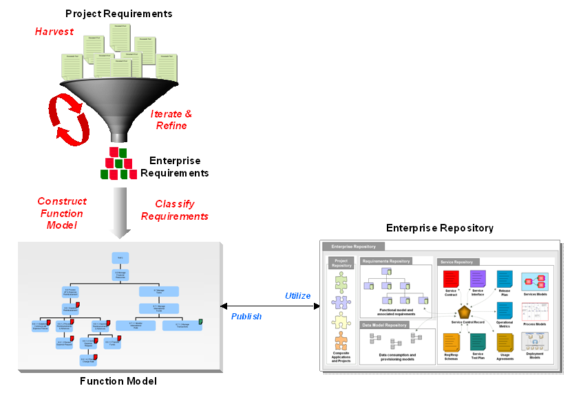
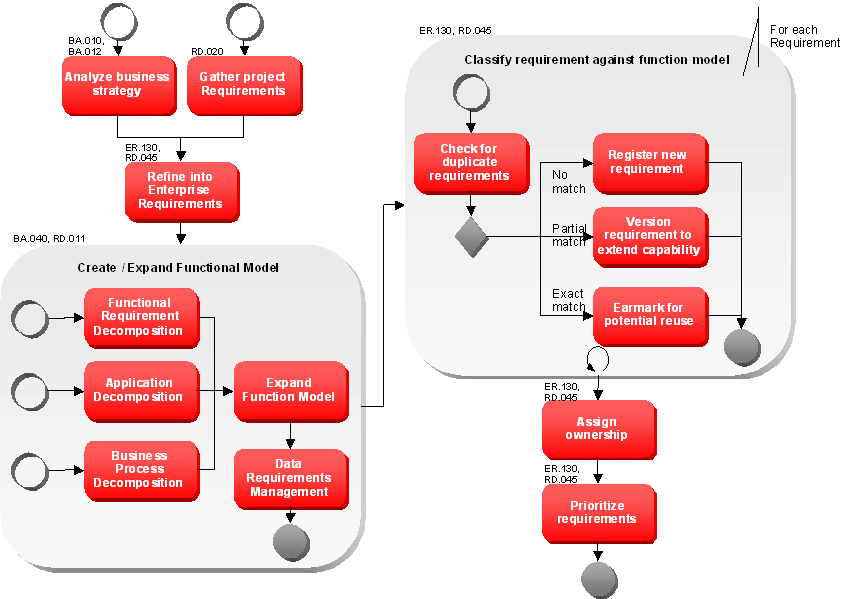
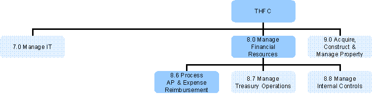
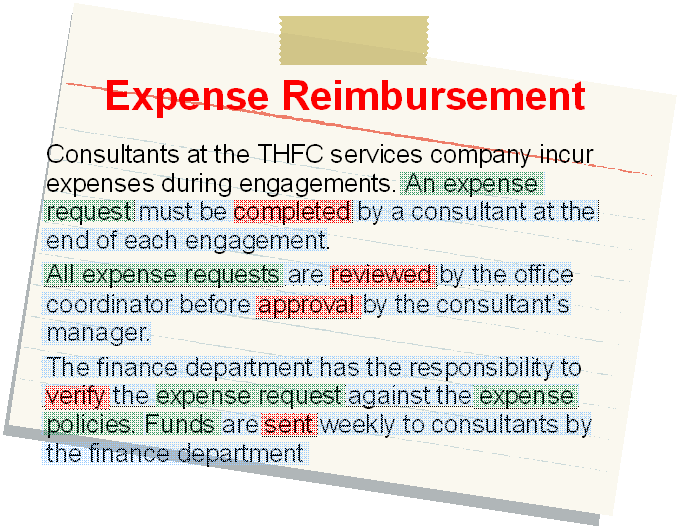
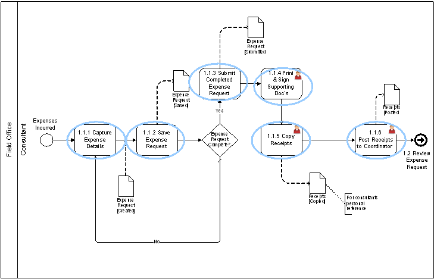
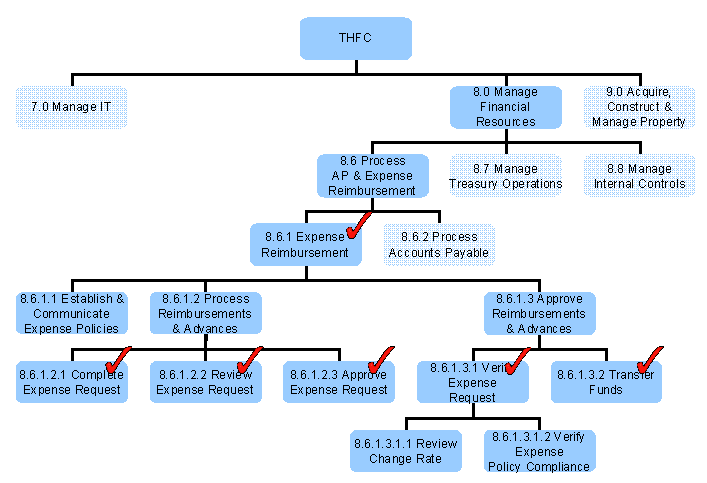
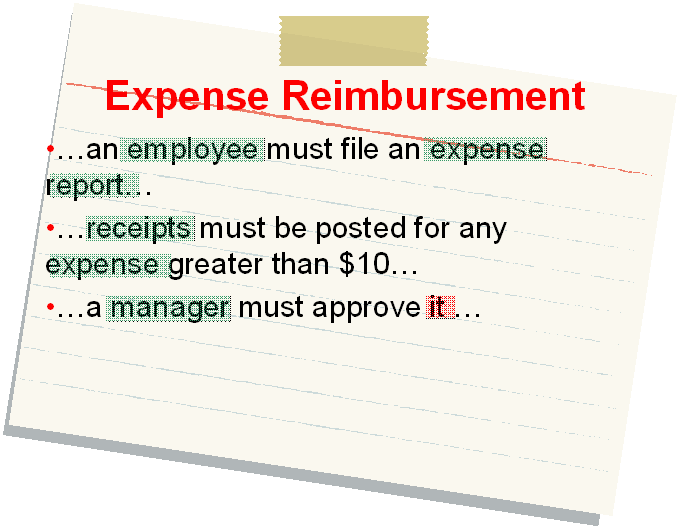
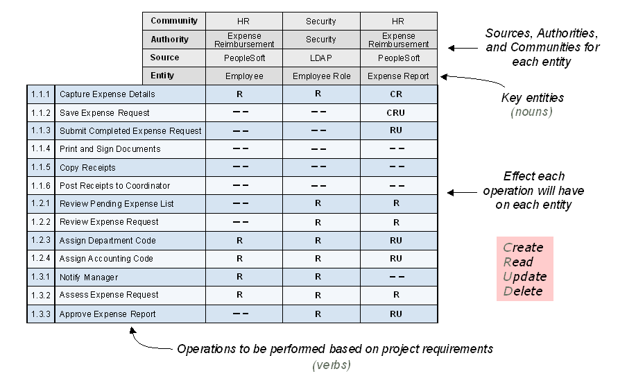
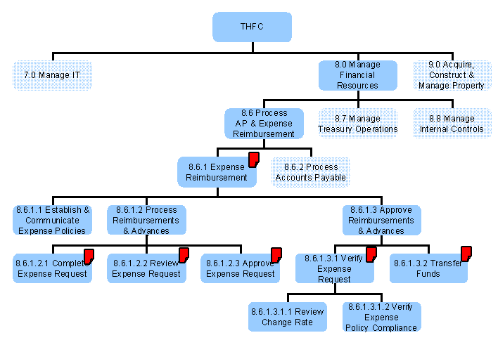
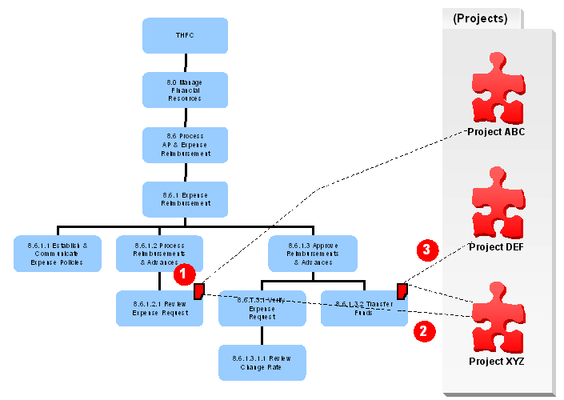

OUM |
Technique Overview |
||
Method Navigation |
Current Page Navigation |
||
|
|
||||||||
The purpose of this technique is to provide guidance for managing requirements at the enterprise level.
There could be multiple reasons for managing requirements at the enterprise level, but the main reason is probably to be able to share and reuse requirements across the enterprise and eventually to reuse the code or services that implement those requirements.
Enterprise requirements management represents an extension to, rather than a replacement for, traditional requirements gathering techniques. The requirements gathering procedures established by an enterprise are reused and extended by the approach outlined in this document. However, more interaction is required between business and IT in order for the approach to be successful. The business will no longer be able to simply draft requirements and throw them over the wall, as an iterative procedure is required.
A few of the key differentiations of enterprise requirements management are:
As with any type of requirements gathering technique, a certain amount of facilitation and coordination skills are required. Requirements gathering requires an attention to detail, as well as the foresight required to ask the questions necessary to fill in the gaps and gain an understanding of supplemental, as well as functional requirements for a system.
Enterprise requirements management requires these same skills to be applied at the enterprise level, with the addition of extra analytical skills required in creating Function Models, classifying requirements and models, as well as analyzing the project requirements against existing enterprise requirements. These skills are definitely necessary to successfully navigate through the enterprise requirements gathering exercises.
Enterprise requirements management is a little different from traditional requirements management. In traditional approaches requirements could be managed in project scope, i.e., each project is defining and managing its own requirements to create a solution in the scope of the project. But with enterprise requirements management, the goal is to share code or services and across the enterprise and as a consequence the projects must share the corresponding requirements as well. In addition, this leads to the need to manage all requirements on an enterprise level to make these requirements visible across all projects, hence to support the process to identify similar or matching requirements, and thereby, identifying either completely new candidates for reuse, or to discovery existing reusable code or services.
Scoping requirements at the enterprise level, rather than at the application or project level enables project architecture and planning exercises to remain connected to the overall enterprise architecture. Managing requirements centrally, at the enterprise level, also demands increased discipline in order to prevent the data collected from becoming disorganized where it will lose its effectiveness. This means that an effective and consistent classification system is required to ensure that Function Models and their respective requirements are always classified correctly.
Classification around Function Models is an effective way to accomplish this. In this approach top-level Function Models create the original branch of an enterprise requirements repository. A model is not necessarily required to create a branch in the repository. For instance a repository may begin with two branches, such as employee-facing and customer-facing. The employee branch would then consist of the models regarding employee servicing (on boarding, payroll, etc), where the customer-facing branch would cover topics such as sales channels, customer service, etc. This creates a tree structure comparable to folders on a hard disk. The path within the tree structure gets the name of the business category.
It is a good practice to create such a high-level taxonomy structure up front, rather than building it out as applications are constructed. There is little doubt that the taxonomy will grow over time, but at least the general framework and structure has been established up front, which sets the framework for the first application.
Another reason for tracking enterprise requirements is that they can be linked to the components that implement them on various levels, such as, applications or services. In the case of services, this is especially useful as requirements form the basis of the service contract definition in a rough form.
In addition to the requirements defined by the business, other requirements may need to be covered to conform to needs of different stakeholder in the enterprise as well. Specifically, if the reference architecture proposes shared runtime platforms, implementations may need to follow special requirements to ensure coexistence of different reusable code or services, or several versions of the same reusable code or services in the same deployment environment. It is important to gather additional requirements from other stakeholders as early as possible to provide enough information for good solution design.
In order to manage requirements at the enterprise level, an enterprise repository should be established to manage and organize the taxonomy, Function Models, and requirements. The following represents a basic set of requirements for an enterprise requirements repository:
The IT Asset Management technique describes the suggested meta models for requirements and models.
The Function Models are used to group requirements within the enterprise requirements repository. These models may also represent the branches within the repository. Typically, the models created will not be as complete to depict the whole enterprise but should be complete enough to preferably depict all capabilities implemented by IT or at least within the given scope. The more complete the set of models the more reuse can be created and the easier is it to do impact analysis on changes.
The reason for using Function Models to classify requirements is for purposes of navigation and scale. Navigating through the Function Model should be quite natural so you can easily find an end point by navigating through a tree-like structure (think binary search, vs. linear search). Once you get to the branch containing the relevant Function Model, the requirements for the model are attached to either the entire model itself, or specific activities within the model. This method also makes it easier to identify duplicate requirements, and is scalable to allow for large numbers of requirements.
The Function Models themselves consist of the set of connected business steps that may relate directly to a particular business process. The model is broken down into a set of pathways (or relationships) between logical business activities and process activities. Business activities represent the business steps that can no longer be decomposed into separate Function Models. Process activities represent business steps that are used to navigate to a lower level Function Model, and provide the basis for Function Model composition. Function Model composition is also used to prevent Function Models from becoming overly complicated. Decomposition is a key identifier for potential Function Model reuse, as multiple Function Models throughout the enterprise may use patterns of Function Models.
The Function Models themselves consist of the set of connected business steps that may relate directly to a particular business process. The model is broken down into a set of pathways (or relationships) between logical business activities and process activities. Business activities represent the business steps that can no longer be decomposed into separate Function Models. Process activities represent business steps that are used to navigate to a lower level Function Model, and provide the basis for Function Model composition. Function Model composition is also used to prevent Function Models from becoming overly complicated. Decomposition is a key identifier for potential Function Model reuse, as multiple Function Models throughout the enterprise may use patterns of Function Models.
When a requirement or model is created it begins in the proposed state. The requirements and models proposed should be validated before assigning an owner. This is typically coordinated with the validation of the proposed implementation approach to the requirements and models. If a requirement or model cannot be delivered within a single iteration, a new version of the requirement or model needs to be created for each iteration planned. This will ensure all requirements and models are aligned with the planned implementation scope and therefore can be used later for test design as well. As a consequence one asset in proposed state can be split into several versions of the asset still in the proposed state. Declined requirements and models will need to be changed until they pass the validation or may be abandoned from the project. Only if the requirement or model will be realized by IT they need to be changed to be implemented as soon as the implementation is available in production. If the model becomes no longer relevant to the business or as soon as a new version is validated it enters the Deprecated state. If no implementation of the model exists in production anymore, the asset can be retired. If a requirement becomes obsolete, the state can be changed to retired directly.
Refer to the description of the lifecycles of a model and a requirement in the IT Asset Management technique.
Enterprise-Managed Requirements - This technique results in managed requirements at enterprise level, with the purpose to make these requirements visible across projects. This includes an effective and consistent classification system to classify requirements.
Classification around Function Models is the suggested approach to accomplish this. In this approach, top-level Function Models form the basis for the original branch of an enterprise requirements repository.
No. |
Step | Component | Component Description |
|---|---|---|---|
1 |
Analyze Business Strategy. | Analyzed Business Strategy | The Analyzed Business Strategy component may lead to identification of high-level requirements. The strategy should be analyzed related to a defined business scope. |
2 |
Gather Project Requirements. | Project Requirements | The Project Requirements component is the collection of project requirements that are gathered using the normal OUM requirements gathering tasks. These will later be refined and classified on enterprise level. |
3 |
Refine requirements into enterprise requirements. | Enterprise Requirements | The Enterprise Requirements component is comprised of the requirements coming from projects that are generalized in requirements that are valid outside the context of a project in the wider enterprise. |
4 |
Construct Function Model. | Function Model | The Function Model component captures the functional requirements fitting the business strategy of the project. The Function Model is represented visually. |
5 |
Classify requirements against model. | Classified Requirements | The requirements are worded in terms of the business, and the requirements are classified against the Enterprise Function Model. |
6 |
Assign ownership. | Requirements Ownership | The Requirement Ownership component shows whom is the owner of the requirement. |
7 |
Prioritize requirements. | Prioritized Requirements | The Prioritized Requirements component is a MoSCoW List with requirements relevant for the project. |
The following illustrates the high-level aspects of Enterprise Requirements Management:

The result is a taxonomy of requirements based on the enterprise's Function Model, rather than requirements grouped by specific areas of application functionality. This allows duplicate or overlapping requirements to be identified, in addition to providing a basis for looking at requirements with potential reuse in mind. Therefore, this approach provides a natural avenue for enabling a Service Identification and Discovery approach in a SOA environment.
The detailed steps to perform Enterprise Requirements Management are listed above in the technique steps table. The figure below shows these steps in a process flow:

Requirements can be derived from the Business Strategy. The Business Strategy may also be used to check the readiness and the feasibility for this type of requirements gathering process. If you analyze the strategy for actual requirements gathering, you need to analyze it within a defined business scope. A requirement defined as such should be seen as a project requirement, and is nothing different than how requirements are normally gathered as part of the OUM Requirements Definition process. You should however keep in mind that the Business Strategy forms an input to requirements gathering.
This step represents the requirements gathering process of OUM. This results in an initial working set of requirements, in the form of various requirements models (business process model, use case model, etc), supplemental requirements and high-level business descriptions. These requirements will later be refined and classified on enterprise level.
A key technique to assist with identifying reusable candidates is functional decomposition. In order to support an enterprise based functional decomposition, requirements must be presented in a format suitable for the scope of the enterprise rather than just for the project's individual needs.
Raw project requirements (usually in the form of use cases in OUM) that have been gathered need to be assessed to ensure that the appropriate level of detail has been captured and verified. In order for the requirements to be valuable in defining a Function Model, they must be formatted in a project neutral format. Requirements that have project specific terminology should be cleansed then reviewed with the project team and business representatives to ensure the requirements are still valid. This iterative process should continue until agreement has been reached on the details of the requirements.
Scoping requirements at the enterprise level, rather than at the application or project level enables project architecture and planning exercises to remain connected to the overall enterprise. In the context of SOA, this connection also provides a natural enabler for service discovery, identification, and SOA release planning.
Apart from the standard information gathered for a requirement (e.g., description, priority), additional attributes are required to classify and enrich requirements to be a viable asset at the enterprise level. These are described in the section, Need for a Centralized Repository of Enterprise Requirements and Models, in this document.
A requirement is initially proposed and a decision is made by the appropriate governance authority to accept or decline the requirement. If the requirement has been accepted then it has been validated in terms of understanding the rationale behind the requirement and it has been described precisely enough to be realized. At some point, the requirement will be assigned to a delivery project to in order for managing requirements in enterprise repository to be realized. At this time, the requirement owner is identified as a specific application or it may be identified as being "Shared". The requirement is then fulfilled by being implemented and when and if it is no longer valid, the requirement can be retired.
The project requirements that have been iteratively refined into enterprise requirements should be classified against the Enterprise Function Model. The Function Model should be represented visually, and also capture the flow of events for each major activity. The purpose here is not to capture mouse clicks, for example, but rather real business steps.
The Function Model is a special type of model to depict the IT view of the related functional activities and their relationship to one another. Please refer to the Functional or Process Modeling technique for how Function Models should be created. Function Models can be decomposed into smaller parts, where a single activity in a higher-level model links to a lower-level Function Model.
Rather than build a fully developed Function Model for an enterprise, as this can take an extended period, it is usually preferable to build out the relevant parts of the Function Model as and when it is required. The following highlights a hierarchal representation of a partial Function Model based on the APQC Process Classification FrameworkSM (PCF)28.

Any part of the Function Model that has not been developed yet can be extended by using a number of decomposition techniques. There are many entry points into using a decomposition technique to build a Function Model. The most commonly used decomposition approaches are described below:
Please note that data requirement decomposition usually follows other decomposition approaches and focuses on the data requirements uncovered by the other approaches.
As more and more projects go through these approaches, the Function Model becomes more complete and less expansion is experienced.
A functional requirement decomposition approach takes raw requirements such as text document or use cases, and refines them to elaborate and extend the existing Function Model. It is common for this approach to be called the "top-down" approach.

Below are the high-level steps that assist with this approach. Over time, experienced practitioners collapse these steps into one streamlined activity:
High-Level Steps
|
Refined Name |
|---|---|
An expense request must be completed by a consultant at the end of each engagement. |
Complete Expense Request |
| All expense requests are reviewed by the office coordinator before approval by the consultant's manager. | Review Expense Request Approve Expense Request |
| The finance department has the responsibility to verify the expense request against the expense policies. | Verify Expense Request |
Funds are sent weekly to consultants by the finance department. |
Transfer Funds |
An application decomposition approach takes existing applications and identifies sources of functionality to surface at the enterprise level, for example for exposing it as a SOA service. It is common for this approach to be called the "bottom-up" approach and is commonly used to modernize an enterprise's integration architecture. While this approach does have some value, it can lead to a number of challenges:
To overcome these challenges, it is best not to utilize the application decomposition approach on its own but to combine it with the functional requirement decomposition approach. This allows a practitioner to analyze applications and identify the appropriate functional boundaries. This can then be utilized to elaborate and extend the existing Function Model. It is common for this approach to be called the "hybrid" or "meet in the middle" approach.
The business process decomposition approach takes requirements defined in various sources, such as text documents, business process models, and business context models and refines them to elaborate and extend the existing Function Model.
During the elaboration process of documenting a business process, individual process activities at all business function levels should be considered when expanding the existing Function Model (see the following). A common error is to include technology-specific activities within a business process model. It is important that these are not considered as part of the Function Model.

The identified functions are then utilized to expand the existing Function Model. It may be necessary to add additional levels to group related activities.
The following shows an expanded Function Model where the identified functions (highlighted by the ticks) have been added to the partial Function Model that is based on the APQC Process Classification FrameworkSM (PCF)28.

The objective of Data Requirements Management is to understand the key business entities within the scope of the project or projects, determine where they fit with respect to semantic communities, authorities, and data sources, and organize this information into a form that can be communicated and classified.
Analyze the enterprise repository and identify the enterprise data models relevant to the Function Models. Examine each Function Model and its activities and gain an understanding of the data requirements. Map already defined data entities from the enterprise data model where possible. For all other entities check, if they are just in the scope of the Function Model or if they should enhance the enterprise data model. In that case, propose a new entity asset for each new data entity identified. Please have a look at the IT Asset Management technique regarding a suggested meta model for data entities.
Once data requirements have been defined and categorized, models can be created and updated to illustrate how the data requirements fit into the overall organization, and where data entities come from. The intent is to build upon previous data modeling efforts to gain a better understanding of enterprise data requirements with each project that is delivered.

Below are the high-level steps that assist with this approach. Over time, experienced practitioners collapse these steps into one streamlined activity.

Note: A more detailed data analysis can be done at this point if required. Please refer to the Enterprise Domain Model - Data Relationship Approach technique.
Data entities identified at this point in time can be used to build a Canonical Message Model. A Canonical Message Model applies a Canonical Message Model to message formats by constructing messages structures, elements and attributes using canonical data. The Canonical Message Model can then be used to transport the data across the Function Models and, therefore, may later be used to standardize interfaces.
This step involves refining the project requirements into an enterprise view. The classification of Function Models and requirements is achieved iteratively between the business and IT divisions. The business provides input regarding the overall business process while the delivery team and the enterprise architecture leadership team develop the models and classifications, which are then cross-checked with the business. The requirement is attached to the appropriate node within the Function Model based on granularity and scope as follows:

As the requirements are classified against the nodes within a Function Model, it is important that the origination of the requirement be documented.

The previous figure shows a scenario where the requirements from three projects are classified and attached to a Function Model. Refer to the following table for an overview of the steps in this example.
| Step | Description |
|---|---|
| 1 |
|
| 2 |
|
| 3 |
|
Before requirements can be added to the enterprise repository, check if any existing requirement partially or fully covers the proposed requirement. Select all requirements with the same business category and the same relationship to the model, and compare the content of the requirement with the new requirement identified.
If an existing requirement fully covers the proposed requirement, then simply earmark the existing requirement as being relevant to the project. You do this by creating a relationship to the project in the Enterprise Repository. If an implementation of the requirement already exists, this should be earmarked for potential reuse.
If an existing requirement partially covers a proposed requirement, then check the commonality and differences to decide if a new version of the existing requirement should be proposed, or if the new portion of the requirement should be separated out into a new requirement on its own. For this decision, take into consideration if the existing requirement is already marked as shared. Create the corresponding new requirements assets or new versions in the Enterprise Repository and earmark all discovered requirements as being relevant to the project, i.e. create a relationship to the project asset.
If there are no matches for the proposed requirement, then register the new requirement within the Enterprise Repository in proposed state and earmark it for the project, i.e., create a relationship to the project asset.
For every requirement and version created in the repository, an owner should be assigned. New versions should inherit the owner of the original version. For new requirements the owner to be assigned depends on the governance model. For example, in a SOA environment, if a quality gate is defined to review requirements with the result of service identification and discovery, the owner may be an interim owner until the requirement is validated and the responsibility for the realization of the requirement can be assigned. Therefore this step represents the initial ownership assignment, which may not be final. The ownership of a requirement is not completely known until the identification procedures are completed. Therefore the requirements stay in status "proposed."
In order to create a MoSCoW List relevant for the project, select all requirements of the repository earmarked for the project, i.e. having a relationship to the project. Assign a priority scoring in project scope and validate it against the states and a possible enterprise priority score available.
There are no templates available to assist with this technique.
This technique is recommended for use in the following OUM tasks:
| Task | Usage |
|---|---|
| Use this technique as an aid in functional modeling to create new or update existing enterprise models with new or adjusted requirements. Also use the technique to classify requirements and models at the enterprise level. | |
| Use this technique in the creation of new or updating of existing enterprise models with new or adjusted requirements. Also use the technique to classify requirements and models at the enterprise level. | |
| Use this technique in the creation of new or updating of existing enterprise models with new or adjusted requirements. Also use the technique to classify requirements and models at the enterprise level. | |
| Use this technique in the creation of new or updating of existing enterprise models with new or adjusted requirements. Also use the technique to classify requirements and models at the enterprise level. | |
| Use this technique to understand how and why enterprise requirements should be gathered, classified and stored at a central location. | |
| Use this technique to identify requirements for the MoSCoW List. | |
| Use this technique as an input to best practices on how to perform enterprise requirements management. | |
| Use this technique for gathering requirements for the projects, in particular for the process of refining the requirements to be classified at the enterprise level. | |
| Use this technique for gathering requirements for the projects, in particular for the process of refining the requirements to be classified at the enterprise level. | |
| Use this technique to identify requirements for the MoSCoW List of individual implementation projects. | |
| Use this technique for gathering requirements for the projects, in particular for the process of refining the requirements to be classified at the enterprise level. | |
| Use this technique for gathering requirements for the projects, in particular for the process of refining the requirements to be classified at the enterprise level. | |
| Use this technique for gathering requirements for the projects, in particular for the process of refining the requirements to be classified at the enterprise level. | |
| Use this technique for gathering requirements for the projects, in particular for the process of refining the requirements to be classified at the enterprise level. |
Use the following criteria to check the quality of this technique:

Copyright © 2006, 2016, Oracle and/or its affiliates. All rights reserved.